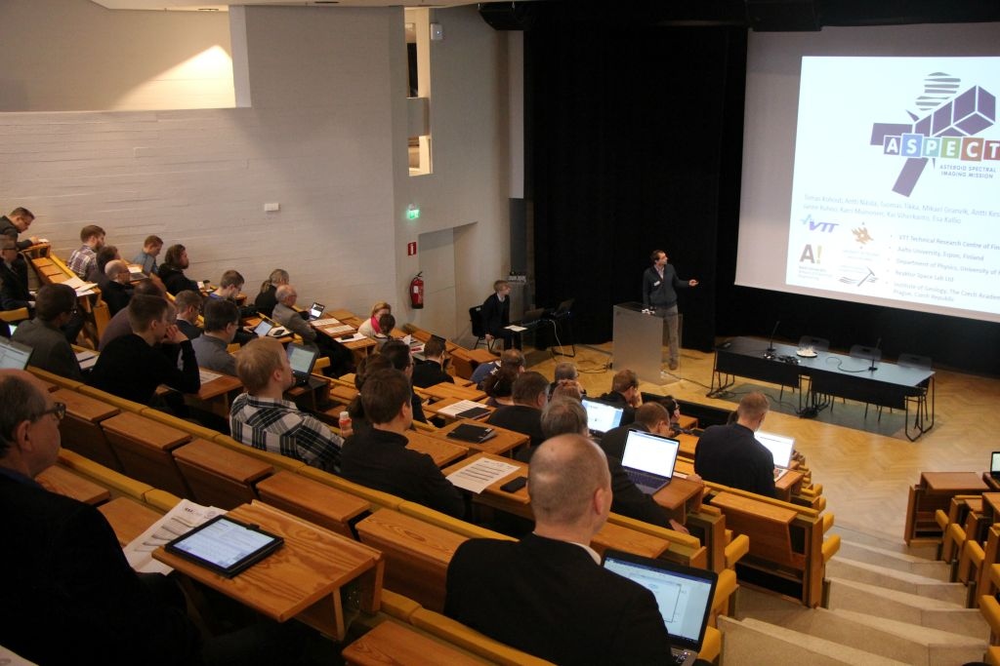

Explore satellites and spacecraft models at the Space Expo and hear talks about Finnish space technology and new satellite data applications.
Join us for an exciting evening full of space exploration insights. The Space Expo showcases Aalto University's satellite projects and the European Space Agency's spacecraft models, along with presentations by renowned experts.
When: 22.1.2026, 17:00 - 20:00
Space Expo: Opens to the public from 17:00 - 19:00. Featuring Aalto satellites, ESA spacecraft models, and Finnish Geospatial Research Institute's research exhibition.
Guided Tours: Start at 17:15 and 18:15
Lectures:
Where: Aalto University Dipoli building, Lumituuli lecture hall, Otakaari 24, Espoo – 5 min walk from the Aalto University metro station (the venue is fully accessible)